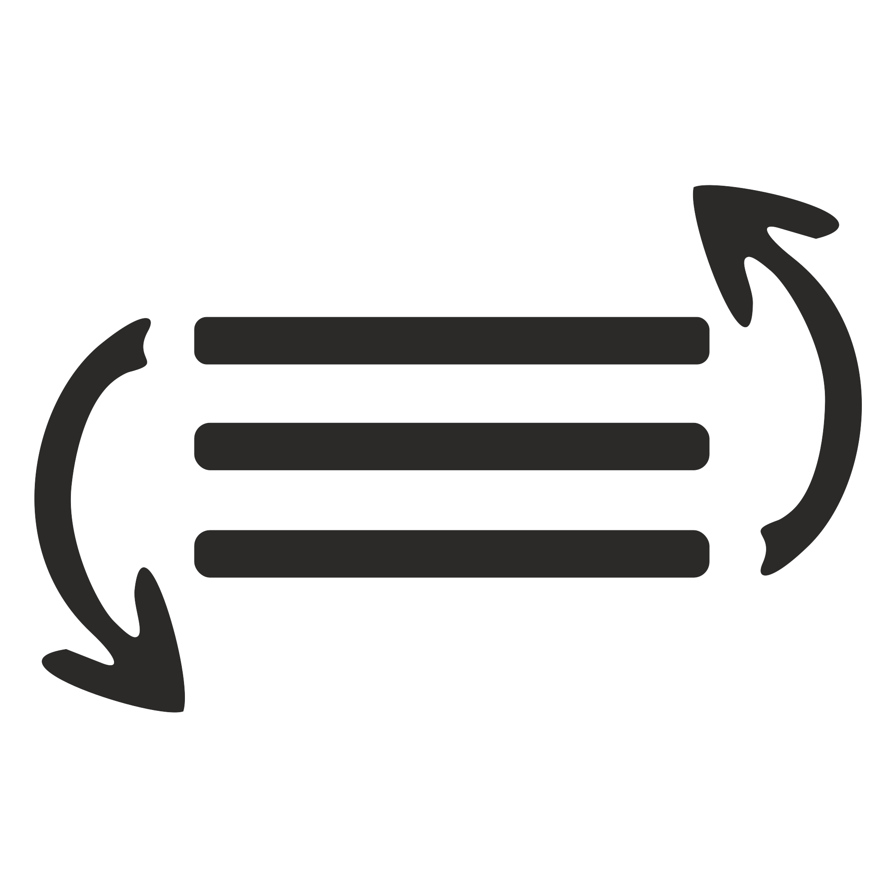
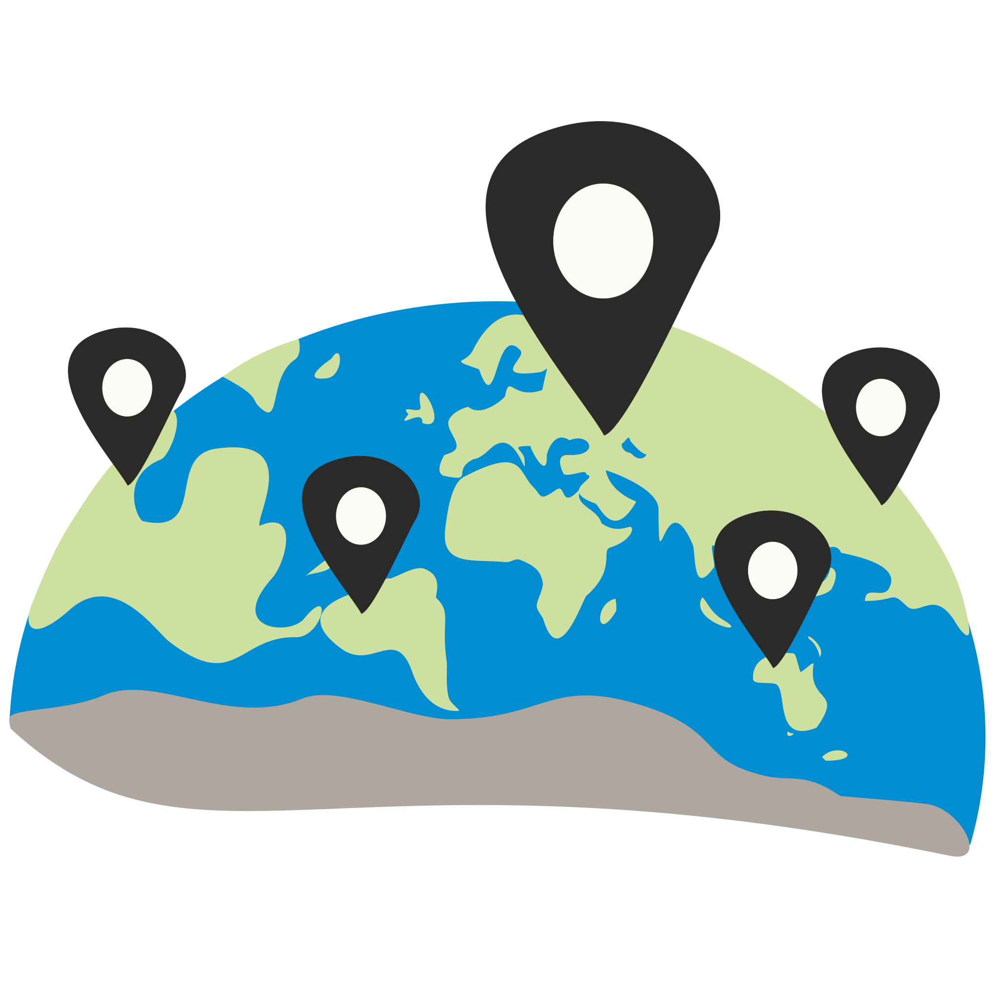
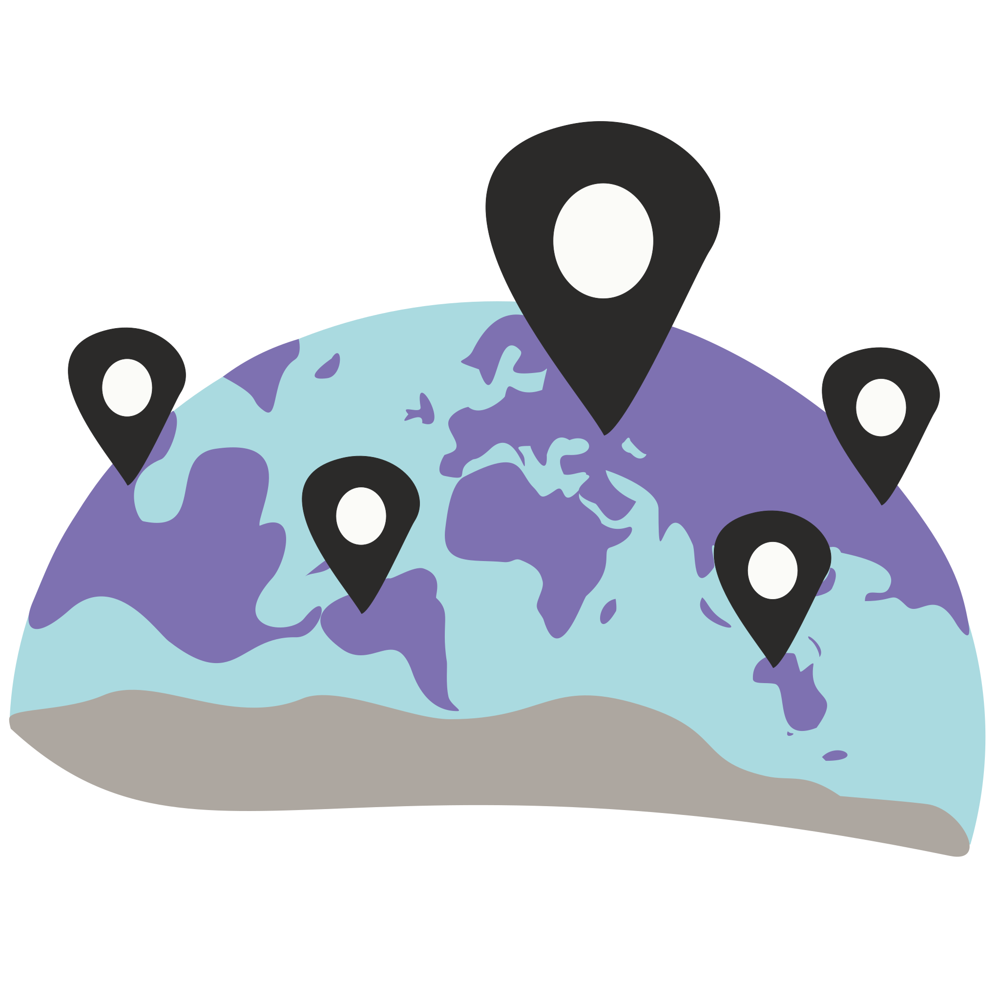

Do-It-Yourself Dream Map - FAQ
This is a short, not-complete guide to the mapping portal.
Drawing
How to draw free-hand on the canvas?
The feature drag-and-drop image as thumbnail doesn't work, what can I do?
Using geographical data
How can I manage the layers of geographical data on the map?
Can I add geographical features (edit a layer)?
May I upload other geographical data to the map?
What is the Additional Map Canvas and how can be used?
Can I make the settings from the dream report automatically appear on the map?
Miscellaneous
Can I save my dream map?
What does this mean: English with a probability of ...
What is the purpose of annotating the dream report?
Side panel won't scroll, what can I do?
Drawing
How to draw free-hand on the canvas?
In the tool pannel , click on the first menu-line named  Sorting Canvas. Check the radio-button for Free Drawing to activate this canvas. If the position of the Free Drawing canvas in this list is under the Map canvas, you might not see what you draw. You can drag the Free Drawing canvas on top of the Map canvas to rectify this. We offer different options for free drawing such as choosing the brush type, the color or the line width: under the Free Drawing menu line. You can also drag-and-drop images (as thumbnails) on the canvas when Free-Drawing-Canvas is active.
The feature drag-and-drop image as thumbnail doesn't work, what can I do?
Please check if the Free-Drawing canvas is you active canvas, before you drag-and-drop the image. To turn Free-Drawing Canvas active go to the tool pannel , click on the first menu-line named Sorting Canvas and check the radio-button for Free Drawing. If the position of the Free Drawing canvas in this list is under the Map canvas, you might not see what you draw. You can drag the Free Drawing canvas on top of the Map canvas to rectify this.
Using geographical data
How can I manage the layers of geographical data on the map?
Under the  Geographic Map menu line you can change the displayed layers on the map. There are two (or three) boxes with layers. From the Available Layers list you can drag-and-drop layers to the other list(s). The Displayed Layers are the layers you can see on the map and you can change their order with drag-and-drop in the list. If you press the button Add New Map Canvas a new,  Additional Map Canvas will appear in the list of the Sorting Canvas. Also to this new list you cand drag-and-drop layers from the available layers. For the utility of an Additional Map see this answer further down.
The layer names point to their type: _V for vector layers, respectively _R for raster layers.
Can I add geographical features (edit a layer)?
Yes. You can edit features on two layers: addLandmarks_V and Playground_V. The layer clippedNow_V contains the selected areas for clipping.
First activate the Map canvas. In the tool pannel click on the first menu-line named Sorting Canvas and check the radio-button for the Map.
You can add features to the map (on the playground_V layer). Choose what type on the feature in the drop-down list Element Type : marker (point), influence circular (point with radius), route free-hand and polyline (curved line and polyline with straighht lines between points), area free-hand and polygon. To add a feature you cand just choose the type in the drop-down list, or press the + button. To stop adding features press again the + button, so it turns purple again. You can also move these features, modify them or erase them. Removing features works in two steps: press on the - icon, select the feature to remove, then press the - icon again to remove it. Short explanations are given near to the buttons. It is possible to clip an OpenStreetMaps layer with the area features in the playground_V layer. For this, press the button Clip With Area and select an area feature you just draw. The result is in the layer clippedNow_V, which you can add to the displayed layers. You can still modify the area feature. You can add also landmarks (they are saved on the layer addLandmarks_V) by pressing the + button near Landmarks. The icon for this latter points can be switched (under the (i) press on the landmark icon displayed in the dropping panel). It is possible to drag-and-drop external vector files of type KML, JSON, GPX or IGC containing geographical data onto the map when the Map-Canvas is active and the corresponding button is pressed (yellow). The modified vector layers are saved as Geojson into the database and redrawn when the dream is requested anew.
May I upload other geographical data to the map?
Yes, it is possible to drag-and-drop external vector files of type KML, JSON, GPX or IGC containing geographical data onto the map when the Map-Canvas is active and the corresponding button is pressed (yellow). For that, the Map canvas has to be active.
In the tool pannel click on the first menu-line named Sorting Canvas and check the radio-button for the Map.
What is the Additional Map Canvas and how can be used?
In a dream a setting can have characteristics of more than one geographical location. This is why the additional map canvas was created, to allow the dreamer to cut and put together two maps. The additional map can be zoomed and moved separately.
Can I make the settings from the dream report automatically appear on the map?
Yes, partially. After you submit your dream report, for the given real place [(and comming soon) you may annotate the text for settings, characters, emotions, time and objects. For each place in this list, if geographic], you receive all geographical entities which contain this name (from geonames, nominatim). There you can select by checking the checkbox, which places should appear on the map. On the map, in the geojsonPlaces_V layer you can find these places.
Miscellaneous
Can I save my dream map?
Yes, it is possible to save a picture of your map locally on your computer by pressing the button Save Dream Map As Image.
In the session storage of your browser we also save some information to allow you to navigate to other pages and continue working on the map afterwards. However, this is not working yet soundly. The same information is saved in our database and retrieved when you go to a dream you already saved at a prior time. You can try this by copying the URL with the dream id in it and saving it for a later editing session of the same dream. Notice that addLandmarks_V layer and the Free-drawing canvas are not saved yet. Moreover, this works only when the text in in English (for now).
What does this mean: English with a probability of ...
Our Web tool analyses the dream text you are sending, to proove if the language is English or not. For this reason, the dream text is sent over a secure connection to indico.io, which provides this information through the use of machine learning. For English texts, we plan to use indico.io also for other querries, such as the automatic detection of place names, of person names or for rating the text on its valence (positive / negative) and on emotions (anger, joy, fear, sadness and surprise).
What is the purpose of annotating the dream report?
The annotations on the dream report will give you the possibility to put the settings on the map; to draw a vector diagram of your social interactions in the dream; or to pre-select a frame for your dream-map depending on the emotion. Another purpose is to save these information for a series of dreams and visualize it as a statistical data (e.g. how often did you dream about your father in the last two months).
Side panel won't scroll, what can I do?
You cannot scroll the content of the side panel. However, you can fold away the opened menu items or hide / show more information by clicking on the Info icon , where available.